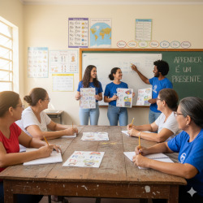

Projeto | Alfabetização Cidadão
O Projeto Alfabetização Cidadão nasce do coração da "Corrente Solidária" com um propósito claro: ir além do B-A-BÁ. Nosso objetivo é promover a alfabetização de jovens e adultos como um ato de resgate da dignidade e como a principal ferramenta para a transformação social. Acreditamos que ler e escrever são direitos humanos fundamentais e o primeiro passo para construir um futuro com mais justiça e igualdade.
O Desafio que Encaramos
No Brasil, milhões de jovens e adultos ainda vivem à margem do mundo letrado. O analfabetismo não é apenas a dificuldade em decifrar códigos e palavras; é uma barreira que limita o acesso a oportunidades de emprego, impede a compreensão plena de direitos e deveres e diminui a participação ativa na sociedade. É uma porta fechada para a autonomia e para o exercício pleno da cidadania.
Como Fazemos
O projeto é estruturado em pilares que combinam educação, acolhimento e cidadania:- Aulas Regulares e Flexíveis: Oferecemos encontros semanais (em horários noturnos e/ou aos fins de semana) para que os alunos possam participar sem prejudicar suas rotinas de trabalho.
- Metodologia Paulo Freire (Aprendizagem Significativa): Não usamos cartilhas genéricas. Partimos da realidade, das histórias de vida e das necessidades dos próprios alunos. Temas como trabalho, saúde, moradia, direitos do consumidor e política local são usados como base para o aprendizado da leitura e da escrita.
- Ambiente de Acolhimento: Criamos um espaço seguro, respeitoso e livre de julgamentos. Nossos voluntários são treinados não apenas para ensinar, mas para facilitar, ouvir e incentivar. Entendemos que muitos alunos carregam o peso da vergonha ou de experiências escolares negativas, e nosso primeiro passo é quebrar essa barreira com empatia.
- Foco na Cidadania: O "Cidadão" no nome do projeto é o nosso maior diferencial. As aulas integram discussões sobre direitos e deveres, acesso a serviços públicos (como postos de saúde e CRAS), compreensão de contas de consumo, leitura de contratos simples e até o uso básico de tecnologias digitais (como aplicativos de mensagens e e-mail).
Quem Pode Participar?
O projeto é 100% gratuito e destinado a jovens (a partir de 15 anos) e adultos da comunidade que não tiveram a oportunidade de se alfabetizar na idade regular ou que, mesmo sabendo "assinar o nome", sentem dificuldade em ler e interpretar textos do dia a dia.Impacto Esperado
Ao final do ciclo, esperamos que nossos alunos sejam capazes não apenas de ler e escrever, mas de:- Ter mais autonomia para resolver problemas cotidianos (ler uma bula de remédio, entender uma receita, pegar o ônibus correto).
- Aumentar sua autoestima e confiança.
- Ampliar suas chances de inserção ou recolocação no mercado de trabalho.
- Participar mais ativamente da vida escolar de seus filhos.
- Compreender seu papel como cidadãos e agentes de mudança em sua comunidade.
Como Você Pode Fazer Parte desta Corrente
O "Projeto Alfabetização Cidadão" só existe graças à solidariedade. Veja como ajudar:- Seja um Voluntário: Se você é pedagogo, estudante de letras ou simplesmente tem paixão por ensinar e paciência para compartilhar conhecimento, junte-se à nossa equipe de facilitadores.
- Doe Materiais: Precisamos constantemente de cadernos, lápis, borrachas, canetas e cartolinas.
- Apoie Financeiramente: Sua doação ajuda a custear o lanche oferecido nos encontros (fundamental para quem vem direto do trabalho) e a manutenção do espaço.
- Indique Alunos: Conhece alguém que pode se beneficiar deste projeto? Incentive-o a nos procurar! O sigilo e o respeito são garantidos.